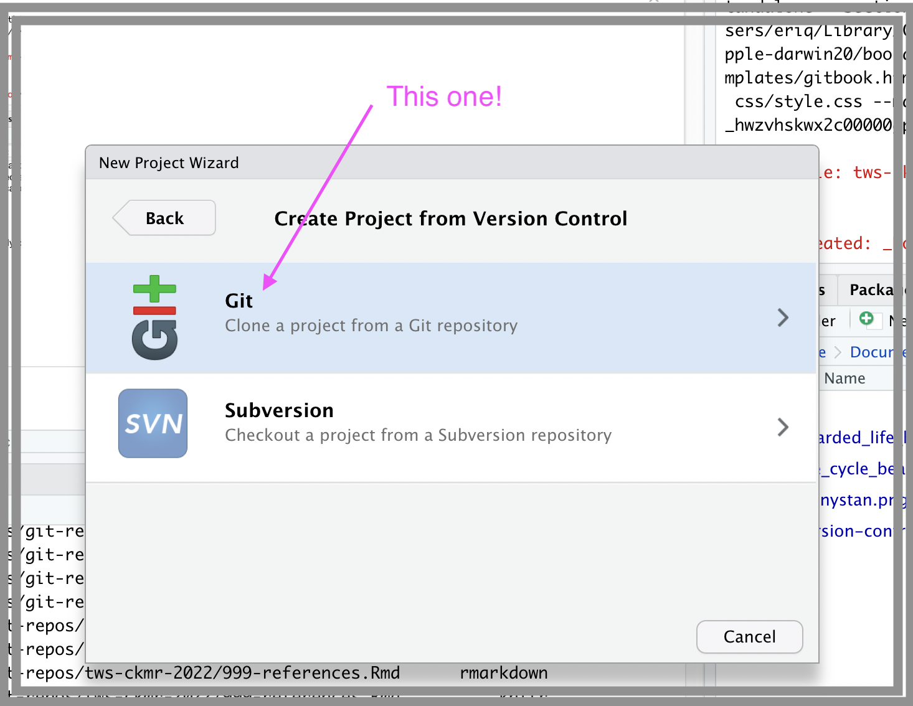

Close-kin mark-recapture: theory and practice — Spokane, Washington, USA
November 6, 2022
Course Overview
This is the website/book associated with the Close-kin mark-recapture: theory and practice workshop to be held at The Wildlife Society meetings Nov 6, 2022 in Spokane, Washington.
Workshop schedule
An approximate schedule for the workshop is as follows. Note that when a session has slides for a lecture, they are linked below.
| Time | Description | Instructor(s) |
|---|---|---|
| 8:00–8:45 | Close-kin mark-recapture: An overview (slides) | P. Conn |
| 8:45–9:30 | An introduction to genetic data and inheritance (slides) | E. Anderson |
| 9:30–9:45 | Break | |
| 9:45–10:30 | Statistical inference for CKMR estimation (slides) | P. Conn |
| 10:30–11:15 | Kin finding | E. Anderson |
| 11:15–12:00 | Designing a CKMR experiment (slides) | P. Conn |
| 12:00–1:00 | Lunch | |
| 1:00–5:00 | R/TMB labs (full day participants only) | P. Conn/E. Anderson |
Workshop attendees had the option of registering for half-day or full-day sessions. The first half will consist almost entirely of lectures, with no previous programming experience needed. The second half will involve labs and exercises conducted in R and/or Template Model Builder (at the user’s discretion).
Full day participants should use the following set of instructions to set up their computers prior to the workshop. Please do this within no more than a day or two of the workshop, as the materials will be evolving up to the day of launch! (Additionally, if you follow the instructions below, any new changes to the afternoon lab materials will be fast and easy to get).
Resources
All the materials for the workshop, including this “book” and all of the slides are located on github at
https://github.com/eriqande/tws-ckmr-2022
The “website” version of the course which serves up this book and the slides is available at
https://eriqande.github.io/tws-ckmr-2022/
These course materials will remain publicly available in perpetuity at the above addresses. We might occasionally update them as well.
There is also additional material and examples that may be of interest at
Setting up your computer
This is only really necessary if you are signed up for the full day course
This course covers topics in close-kin mark recapture, and the second half of the course relies heavily on the R programming language. In order to follow along with the code and be successful in running all of the examples, it will be helpful (if not imperative) for full-day workshop participants to have recent versions of R and RStudio.
Step 1. Install recent versions of R and RStudio
The workshop materials were developed using:
- R versions 4.1 and 4.2
- Rstudio Version >= 2022.07.01
If you have an older version of either of those applications, you should install the latest.
Important Several of the packages must be compiled locally on your laptop, and the TMB package operates by compiling C++ code. Accordingly, in addition to installing R, and RStudio, you must have a compile/build chain on your computer:
- On a Mac, you need to do
sudo xcode-select --installas described here. Note that this requires admin privileges, so, if your computer is administered by your agency or university IT department, get this done before arriving in Spokane. - For Windows, you must download and install the Rtools as available here.
Also very important: The slides for our lectures are rendered using RStudio’s
new Quarto engine, which is a successor to RMarkdown/knitr. This must be enabled
on your system. The best way is probably to install the command line interface for
Quarto by following the instructions here:
https://quarto.org/docs/get-started/
Once you have installed that, you should close and then reopen your RStudio project.
We have tested the workshop materials on several platforms:
- a Mac with an Intel chip running BigSur OSX 11
- a Mac with an M1 (Apple silicon) chip running Monterey version 12.6
- a PC running Windows 10.
We suspect it will also work on most other Mac or Windows operating systems.
Step 2. Make sure that you have git installed on your system
- If you are on a Mac and successfully did
sudo xcode-select --install, then you will havegit. - If you are on a PC and you do not have git, then follow the instructions in the excellent (HappyGitWithR)[https://happygitwithr.com/] book, specifically the “highly recommended” option 1.
A further word on git
Although the distribution our workshop materials depends heavily on git, and the cloud-based code management
system GitHub, that is built upon git, we won’t have the time to delve deeply into
these topics.
You can do everything you need to do for this workshop without having an account on
GitHun, but, if you are interested in version control for
your analyses, and you are interested in using GitHub to share and present the results
of your research, then you really will want to become proficient with both git and
GitHub. Once again, the online book https://happygitwithr.com/
is highly recommended.
Step 3. Get the workshop materials from GitHub with RStudio
Once git is installed and RStudio knows where to find it, RStudio can
use it to download the workshop materials from GitHub. Follow these
steps:
Open RStudio
From the dropdown menus, choose File -> RStudio
In the resulting pop-up window choose and click “Version Control”:

In the next screen of the “wizard” choose “Git”: 
In the next screen of the wizard, paste the following URL into the Repository URL box.
https://github.com/eriqande/tws-ckmr-2022.gitThen use the “Browse” button to tell where you want the project to be stored on your computer (that is up to you!), click “Open in new session” (why not—no reason to close out whatever you were working on in another RStudio project), and then click “Create Project”:
 RStudio then downloads the project and opens it for you. It also
detects that the project is using the ‘renv’ package (see below) and
tells you how to get all the packages you need. It should look something like this:
RStudio then downloads the project and opens it for you. It also
detects that the project is using the ‘renv’ package (see below) and
tells you how to get all the packages you need. It should look something like this:
 .
.To get all the packages, paste these lines into your R console in RStudio:
install.packages("rmarkdown") renv::restore()That should start with ‘renv’ giving you a list of all the packages that will be installed or updated in the repository-local library tree (this should not change versions of packages in your own use-wide or system-wide collection of packages), and it will ask something like:
Do you want to proceed? [y/N]:Enter
y.
That should launch what could be a fairly lengthy process of downloading, compiling (a few, at least) and installing all the R packages we need, and their dependencies.
That should do it, and if it works for most everyone in the course with relatively few hitches, then it is a testament to how well the ‘renv’ package is implemented. If there are some hiccups, we will try our best to help you deal with them.
Updating the project
It is possible that the course instructors may update the project repository with new information, code, or content after you have followed the steps above to do the initial installation.
Fortunately, it is easy to get those updates from GitHub. Updating your project can be done in these two easy steps:
Pull the changes down from GitHub. In RStudio, this means hitting the “Pull” button in the Git panel:

Then in the R console, execute the command.
renv::restore()
That’s it!
A word about the ‘renv’ package
Our work will require a number of packages that can be found in binary form on CRAN. As well as several that require compilation from source on GitHub. This is why the compile/build chain (see above) is essential.
This year, we are using the ‘renv’ package to help with installing the necessary packages in an isolated R library on your computer. The ‘renv’ package guides the installation of all the packages (with specific version numbers that we have tested for this workshop) into a local R library associated with the workshop’s RStudio project. This means that installing all these new packages will not overwrite your current R library tree. So, nothing that we do should change the way your current R setup works in other projects (fingers crossed!).
A word about the TMB package
In the full day workshop we will make some use of Template Model Builder (TMB); attendees might wish to familiarize themselves with how it works by reading some of its documentation, such as that at https://kaskr.github.io/adcomp/Introduction.html).
For the mathematically or computationally inclined, the article about TMB on arXiv might be a fun read.